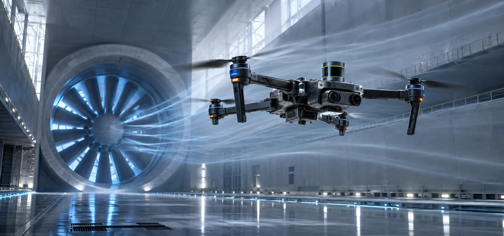
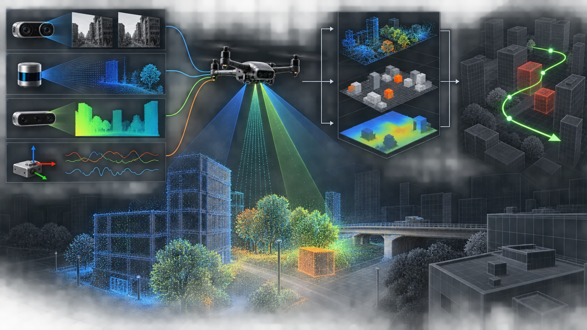
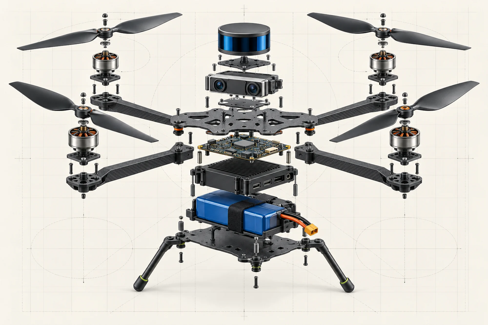

FLIGHT / 01
FLIGHT / 0101—03
AR-4X 四旋翼无人机
高性能自主导航无人机，搭载先进视觉系统
35 MIN80 KM/H

SELECTED PROJECTS
不止验证概念。我们围绕真实场景完成硬件、算法与系统工程的闭环。
FLIGHT / 01高性能自主导航无人机，搭载先进视觉系统
 GROUND / 02
GROUND / 02面向复杂环境的智能巡检与移动作业平台
 HEAVY / 03
HEAVY / 03为物流运输与特种任务设计的重载飞行平台
RESEARCH MATRIX
软硬件协同研发，让机器人在复杂、动态、未知环境中稳定工作。
视觉 SLAM、路径规划与动态避障，实现复杂环境中的精准定位。
Learn more ↗目标检测、三维感知与场景理解，构建可靠的环境认知能力。
Learn more ↗非线性控制与运动规划，提升机器人在极限工况下的稳定性。
Learn more ↗分布式决策与任务分配，让多机器人系统高效协同作业。
Learn more ↗动力系统建模与能源管理，持续拓展自主平台的任务边界。
Learn more ↗低时延无线通信与链路冗余，保障任务数据持续可靠传输。
Learn more ↗TECHNOLOGY ATLAS
从硬件构成到环境建模，再到多机协同，用可视化方式拆解自主系统背后的工作原理。

相机、激光雷达与惯性传感器持续采集环境信息；算法将它们融合为三维地图，并实时规划安全轨迹。

动力、能源、感知与计算模块通过飞控系统协同，形成从输入到执行的完整闭环。
空中与地面机器人将共享地图、任务与决策，成为城市巡检、应急响应和环境研究的新型基础设施。
用长期投入，换取每一次可靠起飞。
RECOGNITION
智能巡检无人机系统

智能侦察机器人系统

自主导航无人机平台
 BUILD / TEST / ITERATE
BUILD / TEST / ITERATEABOUT THE LAB
空中机器人实验室成立于 2014 年，隶属于南京工程学院创新创业学院。
我们聚焦四旋翼机器人和轮式机器人核心技术，从机械结构、嵌入式系统到感知与控制算法，完成跨学科的系统研发，并让学生在真实项目里成长。
THE PEOPLE
START A CONVERSATION
项目合作、技术交流或加入实验室，欢迎留下你的信息。
南京市江宁科学园弘景大道 1 号
创新创业学院 · A104
025—86118000
2819136493@qq.com
MON—FRI · 08:00—21:00